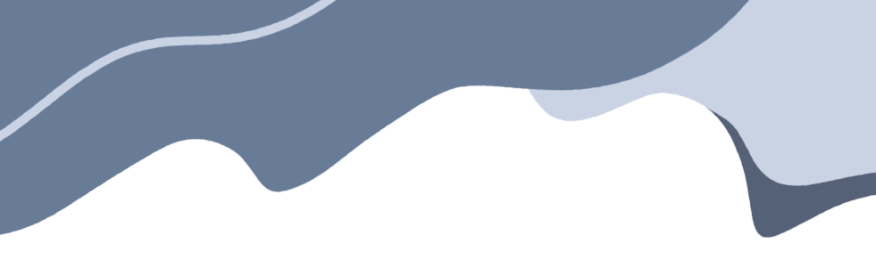
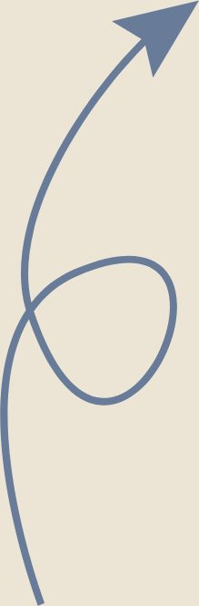
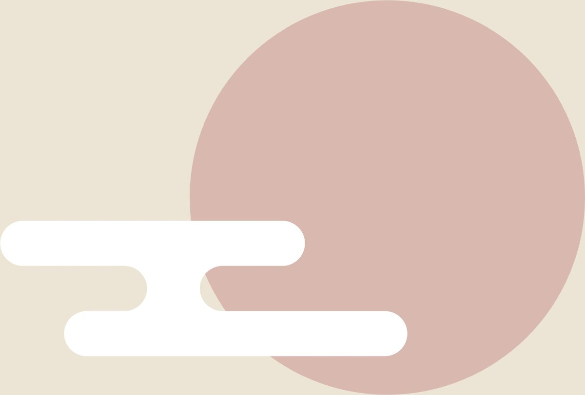

灵魂不羁，脚步不止


行者无疆·赓续前行
Should we strive for
or let nature take its
course in life？
灵魂不羁
脚步不止
心之所向
素履以往
I don't know
how to
choose

很荣幸能够加入到行者无疆这个大家庭中，和大家一起经历了一场令人难忘的文化之旅。短暂而又快乐的时光结束了，我们也收获满满。心中有信仰，头顶是星光，行者们步伐坚定，新的相遇与惊喜还在更远的远方。


人生苦短，要么读书，要么旅行，身体与灵魂，总要有一个在路上。在与行者们同行的路途中，我收获了很多，也让我对文化有了更加深刻的理解。文化是一个民族的精神和灵魂，是国家发展和民族振兴的强大力量。文化的保护与传承至关重要，作为一名中国人，我们自然有责任与义务去保护我们优秀的传统文化。天高路远，山水终会相逢，行者们秉持初心，永远前行，步履不停。要永远相信头顶的星空和你坚实的步履。
来源 | 行者无疆实践团
文字 | 孙思涵
排版 | 高懿玢
审核 | 温兆琪 朱华玮